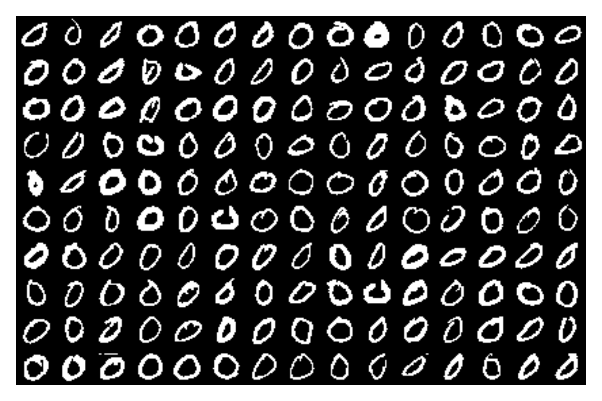
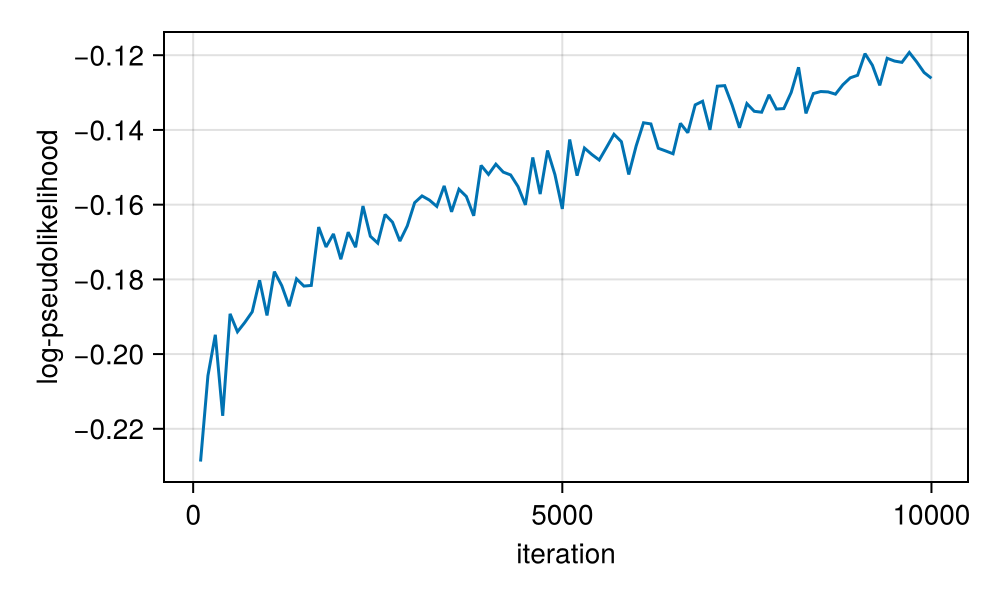
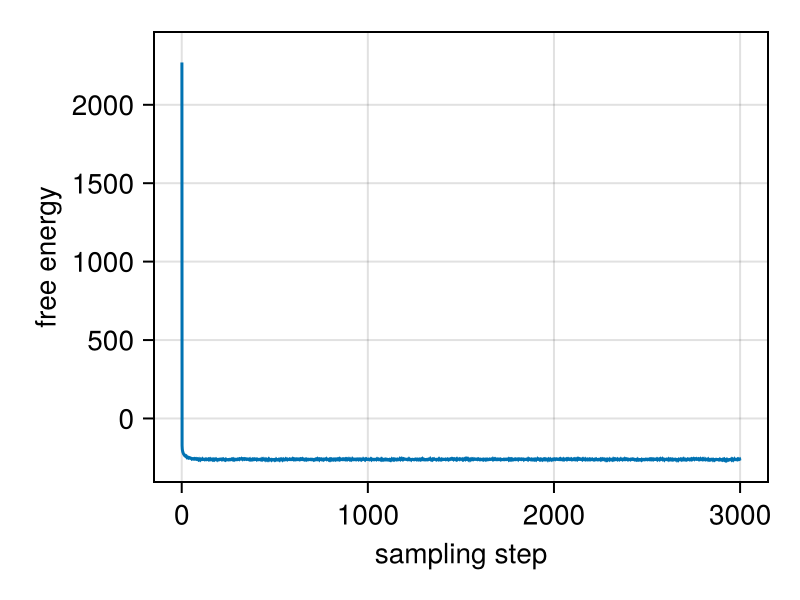
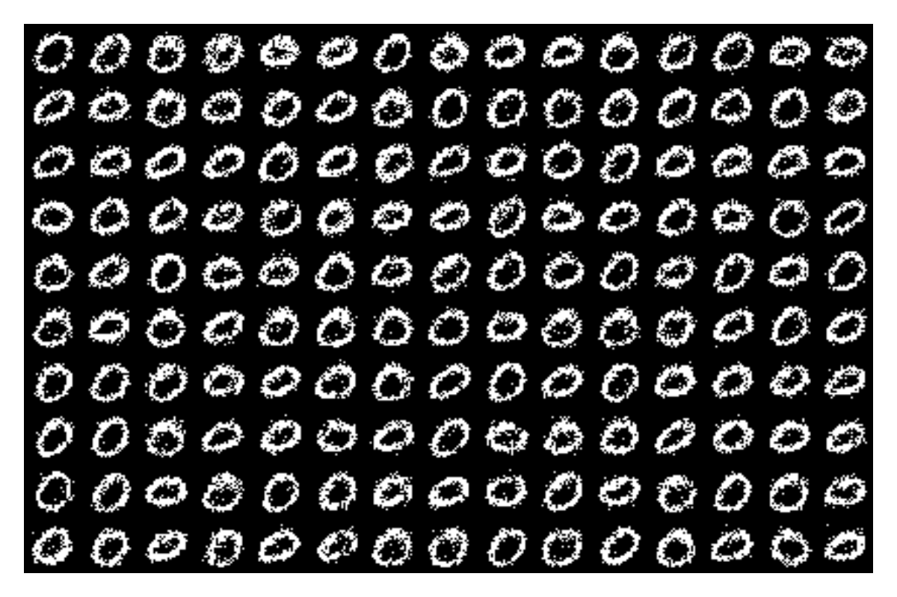

Weight normalization
The authors of https://arxiv.org/abs/1602.07868 introduce weight normalization to boost learning. Let's try it here on MNIST digits.
Preliminaries:
import CairoMakie
import MLDatasets
import RestrictedBoltzmannMachines as RBMs
import WeightNormalizedRBMs as wRBMs
using Random: bitrand
using Statistics: mean, std
using ValueHistories: MVHistory, @traceThe following is a convenience function to plot grids of digits. Given a four dimensional tensor A of size (width, height, ncols, nrows) containing width x height images in a grid of nrows x ncols, this returns a matrix of size (width * ncols, height * nrows), that can be plotted in a heatmap to display all images.
function imggrid(A::AbstractArray{<:Any,4})
reshape(permutedims(A, (1,3,2,4)), size(A,1)*size(A,3), size(A,2)*size(A,4))
endimggrid (generic function with 1 method)Load data, binarized. Keep only 0 digits for speed.
Float = Float32
train_x = MLDatasets.MNIST(split = :train)[:].features
train_y = MLDatasets.MNIST(split = :train)[:].targets
train_x = Array{Float}(train_x[:, :, train_y .== 0] .≥ 0.5)
train_nsamples = size(train_x, 3)5923Let's visualize some random digits from the training set.
nrows, ncols = 10, 15
fig = CairoMakie.Figure(size = (40ncols, 40nrows))
ax = CairoMakie.Axis(fig[1, 1], yreversed = true)
idx = rand(1:train_nsamples, nrows * ncols) # random indices of digits
digits = reshape(train_x[:, :, idx], 28, 28, ncols, nrows)
CairoMakie.image!(ax, imggrid(digits), colorrange = (1, 0))
CairoMakie.hidedecorations!(ax)
CairoMakie.hidespines!(ax)
fig
Initialize an RBM, then re-parameterize it with the weight normalization trick by wrapping it in a WeightNormRBM. Training with pcd! then optimizes the weight norms g and directions u instead of the raw weights w.
rbm = RBMs.BinaryRBM(Float, (28, 28), 400)
RBMs.initialize!(rbm, train_x)
wrbm = wRBMs.WeightNormRBM(rbm) # weight normalization reparameterizationTrain with Persistent Contrastive Divergence, tracking the pseudolikelihood of the data with a callback.
batchsize = 256
iters = 10000
history = MVHistory()
@time RBMs.pcd!(
wrbm, train_x; iters, batchsize, steps = 5,
callback = function (; iter, _...)
if iszero(iter % 100)
lpl = mean(RBMs.log_pseudolikelihood(RBMs.RBM(wrbm), train_x))
@trace history iter lpl
end
end
)
rbm = RBMs.RBM(wrbm) # convert back to an ordinary RBM744.887455 seconds (37.02 M allocations: 568.319 GiB, 32.19% gc time, 2.15% compilation time)Let's see what the learning curve looks like.
fig = CairoMakie.Figure(size = (500, 300))
ax = CairoMakie.Axis(fig[1, 1], xlabel = "iteration", ylabel = "log-pseudolikelihood")
CairoMakie.lines!(ax, get(history, :lpl)...)
fig
Now let's generate some digits by Gibbs sampling from the trained RBM, tracking the free energy of the fantasy chains to check equilibration.
nsteps = 3000
fantasy_F = zeros(nrows * ncols, nsteps)
fantasy_x = bitrand(28, 28, nrows * ncols)
fantasy_F[:, 1] .= RBMs.free_energy(rbm, fantasy_x)
@time for t in 2:nsteps
fantasy_x .= RBMs.sample_v_from_v(rbm, fantasy_x)
fantasy_F[:, t] .= RBMs.free_energy(rbm, fantasy_x)
end 21.122781 seconds (241.79 k allocations: 11.988 GiB, 6.19% gc time, 0.56% compilation time)The free energy decreases and stabilizes, indicating equilibration.
fig = CairoMakie.Figure(size = (400, 300))
ax = CairoMakie.Axis(fig[1, 1], xlabel = "sampling step", ylabel = "free energy")
fantasy_F_μ = vec(mean(fantasy_F; dims = 1))
fantasy_F_σ = vec(std(fantasy_F; dims = 1))
CairoMakie.band!(ax, 1:nsteps, fantasy_F_μ - fantasy_F_σ / 2, fantasy_F_μ + fantasy_F_σ / 2)
CairoMakie.lines!(ax, 1:nsteps, fantasy_F_μ)
fig
The sampled digits look reasonable:
fig = CairoMakie.Figure(size = (40ncols, 40nrows))
ax = CairoMakie.Axis(fig[1, 1], yreversed = true)
CairoMakie.image!(ax, imggrid(reshape(fantasy_x, 28, 28, ncols, nrows)), colorrange = (1, 0))
CairoMakie.hidedecorations!(ax)
CairoMakie.hidespines!(ax)
fig
This page was generated using Literate.jl.